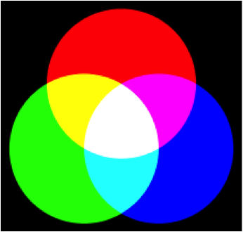

Imágenes¶
Otro caso de datos agregados son las imágenes. ¿Como podemos representar una fotografía con ceros y unos? Supongamos que tenemos una imagen con una resolución de 800 x 600. Esto nos da un total de 480.000 puntos, cada uno de ellos con un color. Lo que necesitamos, por lo tanto, es asignar un código numérico a cada color, de igual forma que hacíamos con el alfabeto en el caso de los textos. De esta forma, la imagen se podrá representar como una secuencia de 480.000 códigos.
Se podría pensar que no resulta fácil asignar un código a todos y cada uno de los matices de la naturaleza, pero no debemos olvidar que todo color se representa mediante la combinación de otros tres básicos: rojo, verde y azul. De esta forma, si combinamos un 0% de azul, un 100% de rojo y un 100% de verde, obtendremos el amarillo. Nótese que ya estamos utilizando números para representar un color.

Una codificación muy popular es la RGB (abreviatura de Red/Green/Blue), donde para representar cada color usamos tres bytes, uno por cada color básico. Teniendo en cuenta que un byte puede tomar 256 valores diferentes, desde 0000 0000 hasta 1111 1111, con tres bytes tendremos 256 x 256 x 256 combinaciones, es decir, más de 16 millones de colores, suficiente si pensamos que según varios estudios científicos, el ojo humano no es capaz de distinguir más allá de 10 millones de colores diferentes.
Veamos algunas combinaciones elementales. Los códigos correspondientes a cada color los representamos mediante seis dígitos hexadecimales, donde los dos primeros representan la cantidad de rojo de 00 a FF, los dos de en medio el verde, y los dos últimos, el azul. Por ejemplo, un rojo puro sería FF0000:
| Color | Código hexadecimal | |
|---|---|---|
| rojo | ff0000 | |
| verde | 00ff00 | |
| azul | 0000ff | |
| amarillo | ffff00 | |
| cian | 00ffff | |
| fucsia | ff00ff | |
| negro | 000000 | |
| gris | 808080 | |
| gris claro | c0c0c0 | |
| blanco | ffffff | |
| marrón | 800000 | |
| verde oscuro | 008000 | |
| azul oscuro | 000080 | |
| dorado | 808000 | |
| púrpura | 800080 | |
| verde azulado | 008080 |
Cuando ponemos la misma cantidad de los tres colores básicos, obtenemos una gama de 256 tonalidades de gris, que va de 000000 (negro) a FFFFFF (blanco).
¿Cuántos bytes hacen falta para representar una imagen cuya resolución es 800 x 600? Necesitamos tres bytes por cada punto de color, para representar los tres colores básicos, por lo que en teoría la imagen completa requeriría 800 x 600 x 3 = 1.440.000 bytes, aproximadamente un megabyte y medio. En realidad, muchos de los códigos se repiten, y existen algoritmos que detectan esta información redundante y la gestionan comprimiendo las imágenes para que ocupen menos espacio. Un formato típico de imagen sin comprimir es “.bmp”, pero con formatos como “.jpeg”, lograremos representarlas con menos bytes.
RGB no es la única codificación para representar colores. Otra muy popular es HSL, que también utiliza tres bytes para cada color, indicando los valores de Matiz, Saturación y Luminosidad en lugar de los tres colores básicos. Véase artículo en la Wikipedia.
Multimedia¶
Consideremos ahora el caso de los archivos de vídeo. Una película no es más que una secuencia de fotogramas, por lo que basta con digitalizar cada uno de ellos para obtener una serie de imágenes. A eso habrá que añadirle sonido.
Los sonidos se pueden expresar en términos de frecuencia, longitud de onda, etcétera. Véase por ejemplo la página dedicada al audio digital en la wikipedia. En todo caso, un sonido se puede expresar como una secuencia de valores numéricos.
¿Y que pasa con los juegos de ordenador? Son secuencias de imágenes generadas por la máquina en base a algoritmos y cálculos. El vídeo resultante se codifica de igual forma que hacemos con las películas.